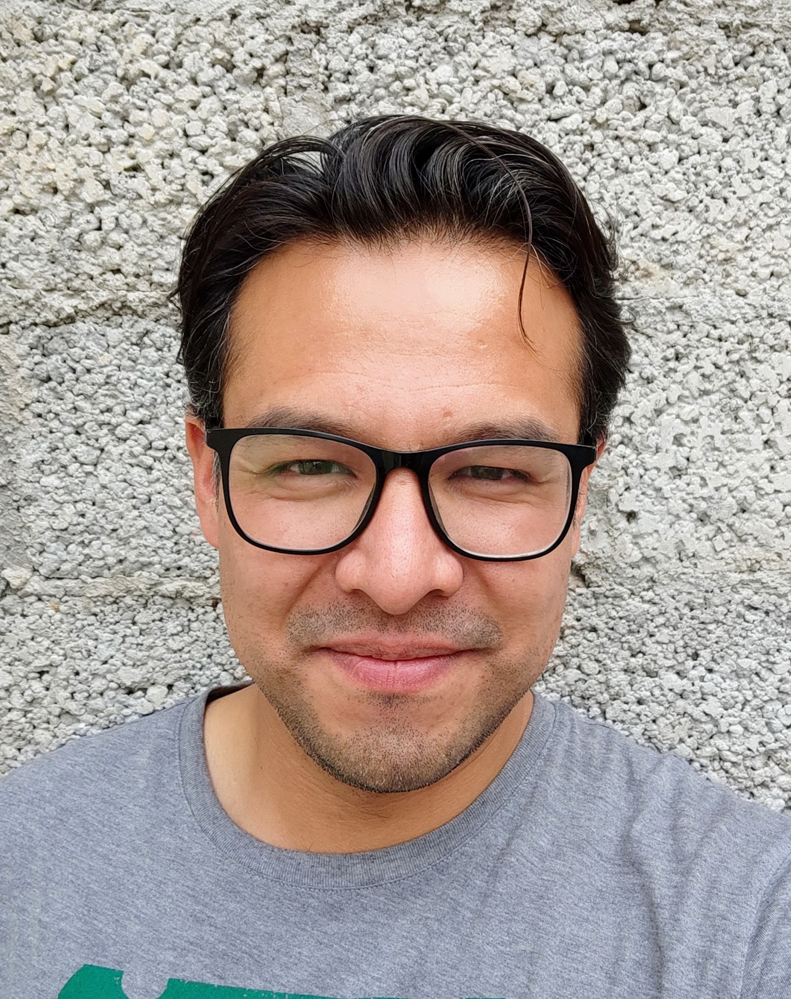

Bernardo Blas
Ingeniería en Software
| bblas17@gmail.com |
|
Cel. 5517712843 |
|
CDMX, México |
Sobre mí
Estudiante de ingeniería en software con experiencia como Supervisor en el área de Monitoreo, así como en Operaciones de Logística. Entusiasta del aprendizaje para la mejora continua y de procesos.
Formación Académica
Habilidades
- Liderazgo de equipos de trabajo
- Resolución de problemas
- Enfoque en resultados
- Gestión de personal
- Adaptabilidad
- Proactividad
Intereses
- Programación
- Lectura
- Música